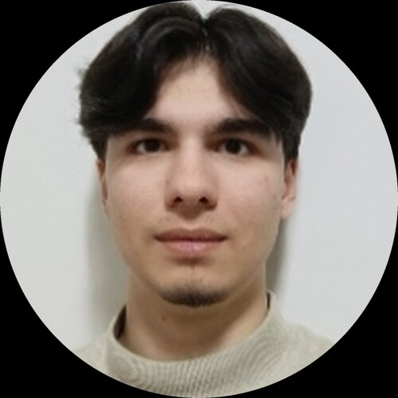

Gazi Üniversitesi — Bilgisayar Mühendisliği (Lisans)
GANO: 3,67 / 4,00

Gazi Üniversitesi Bilgisayar Mühendisliği 2. sınıf öğrencisiyim ve Elektrik-Elektronik Mühendisliği'nde çift anadal yapıyorum. Gömülü sistemler ve uç cihazlarda yapay zekâ (Edge AI) alanlarına odaklanıyorum; TEKNOFEST İHA takımında NVIDIA Jetson üzerinde gömülü yapay zekâ ve görüntü işleme çalışmalarında görev alıyorum.
Programlama: C, C++, Java, Python, Haskell
Gömülü Sistemler ve Yapay Zekâ: NVIDIA Jetson, Gömülü Linux, Görüntü İşleme, Makine Öğrenmesi
Yazılım: Nesne Yönelimli Programlama (OOP), Tasarım Desenleri, Java Swing, SQLite / JDBC, Maven, Bellek Yönetimi
Araçlar: Git, GitHub, Linux
Diller: Türkçe (ana dil), İngilizce (B2) · Hobiler: Piyano, gitar, klasik müzik, Rubik küp, matematik problemleri